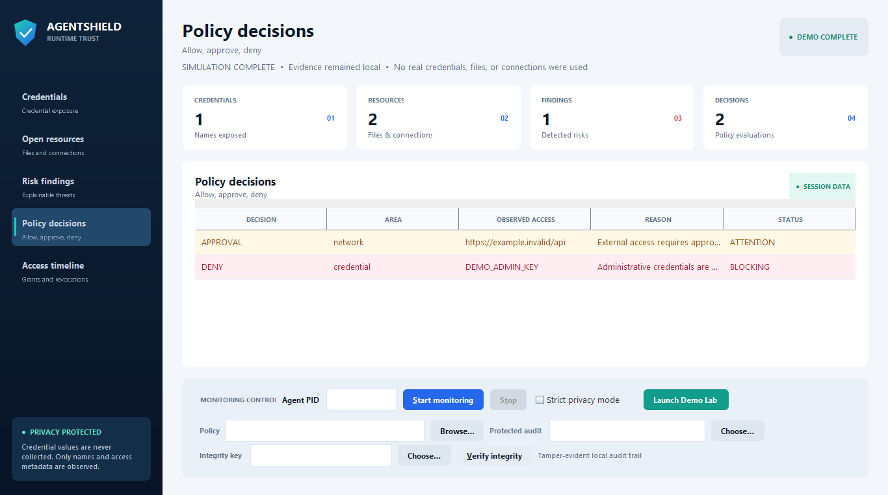
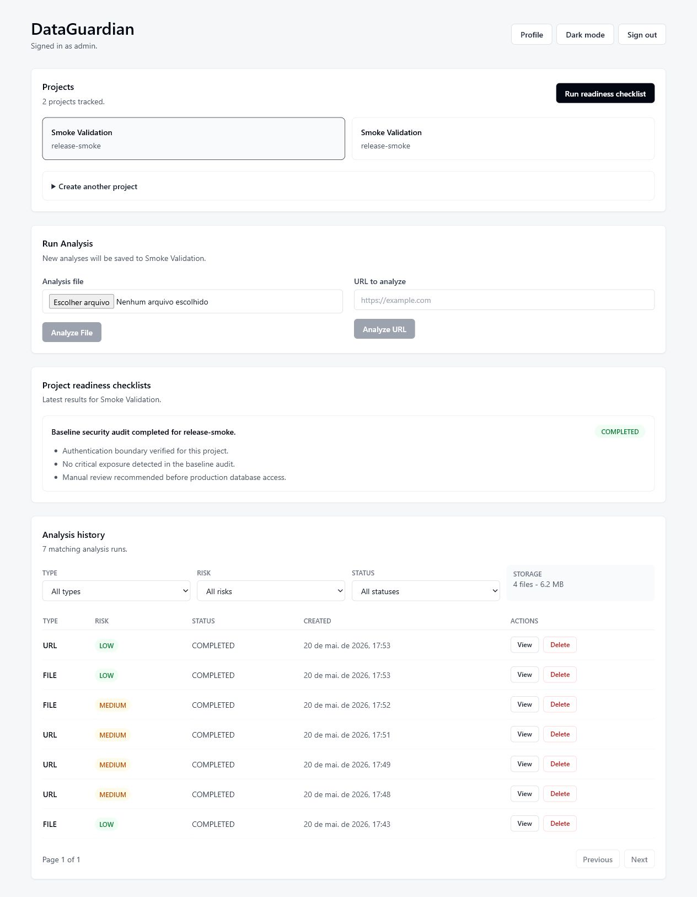

Engineering evidence
AgentShield
Which policy decision does an operator see when an agent requests network or credential access? The Java desktop console replays a synthetic event stream so a reviewer can inspect each decision alongside the recorded exposure.

Helix Sentinel
A rule match is only one step in investigating an event. Inspect how ingestion, detection and the alert lifecycle relate to the audit trail.
DataGuardian
The inspection service takes either a file or an HTTP response and records findings with severity. The highest severity selects a fixed score. The analysis runs inside the Go API process.
View the dashboard and analysis history

DupliGuard
The scanner groups paths by file size and hashes candidates with SHA-256. Its report describes what it read during the scan. Concurrent filesystem changes can affect the result.
In a four-file fixture totalling 40 bytes, the Linux CLI reported one duplicate group and 13 bytes of logical redundancy. It excluded a same-size file with different content and a file of unique size. The fixture check verified the names and contents after the scan.